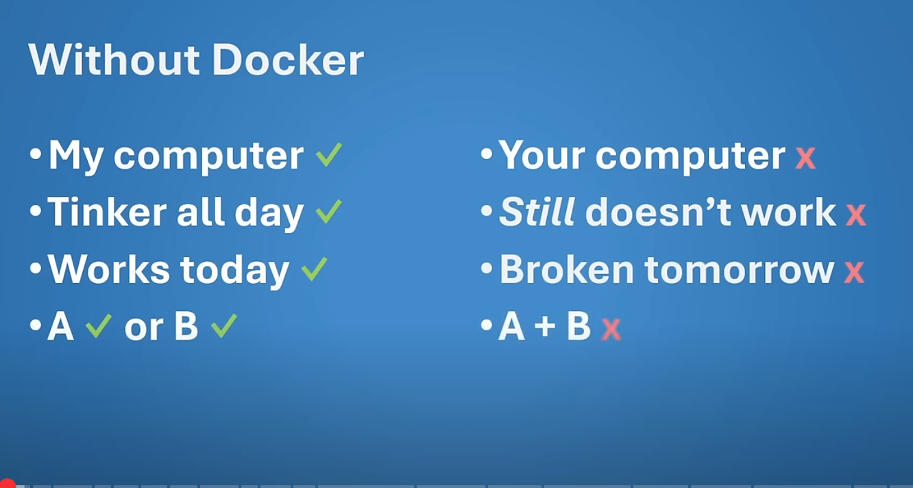
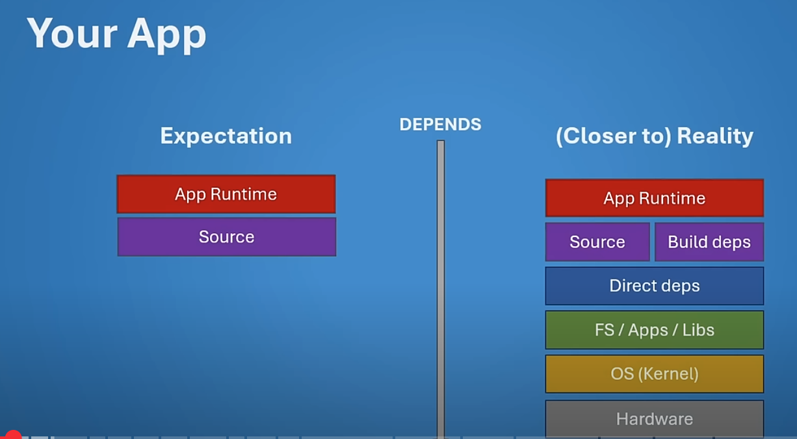
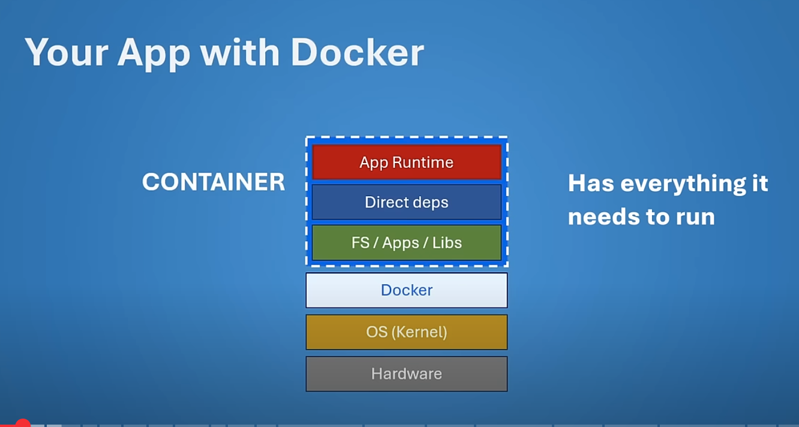
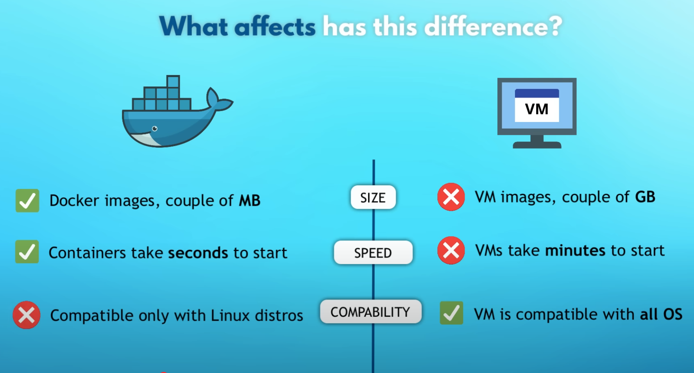

01
Docker is useful for when:
- update on computer breaks program
- program works on one machine not another
- ... and more
Similiar to VMs (virtual machines) but way less space and faster startup time
**pic from video click top right img for link01


apps often require configurations from else where in the computer, Docker fixes this by creating and adding to your app IMAGES & CONTAINERS
**pics from video click top right img for link

03
VM vs CONTAINER
**pic from video click top right img for link